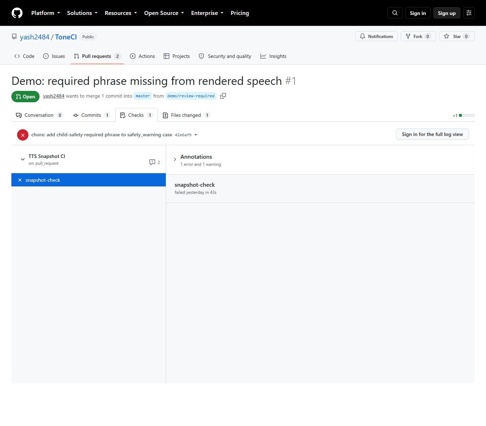
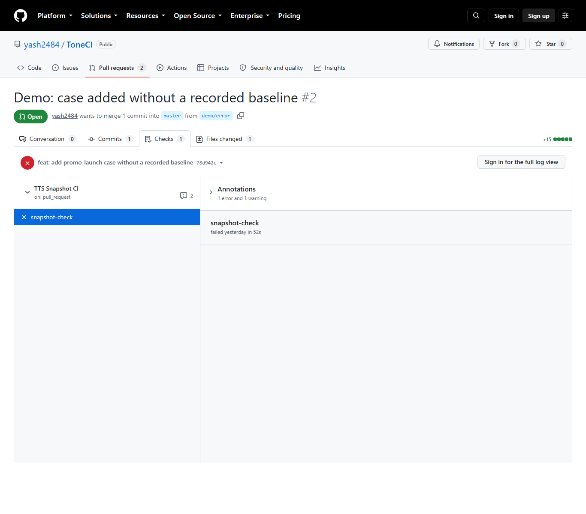

PASS
ToneCI · voice-change checks
Sound changed. Should someone listen?
ToneCI re-renders a script that was already approved and compares the new audio to the old. If the wording, timing, or pauses shifted beyond a set tolerance, it asks a human to listen. This page shows the checks that ran: green means nothing needed a second look, amber means it wanted one, red means the check could not finish.
PASSREVIEW_REQUIREDERROR
Checks I ran while building it
PASS
The first full calibration, one case at a time.
View this checkREVIEW_REQUIRED
The required safety phrase was present, but the phone number transcribed differently. It asked for a human ear.
View this checkREVIEW_REQUIRED
A price transcribed differently between the two recordings. It asked for a human ear.
View this checkERROR
New cases had no approved recording yet, so the check could not run.
View this checkThe same check, running in GitHub Actions
PASS
Master branch on a schedule. All six cases passed and the report was uploaded.
View this checkREVIEW_REQUIRED
Pull request #1 adds a required safety phrase to the script. One case crossed the threshold and the check asked for a human ear.

Open the pull request ↗ERROR
Pull request #2 adds a case that has no approved recording yet. The check could not run and the job failed.

Open the pull request ↗